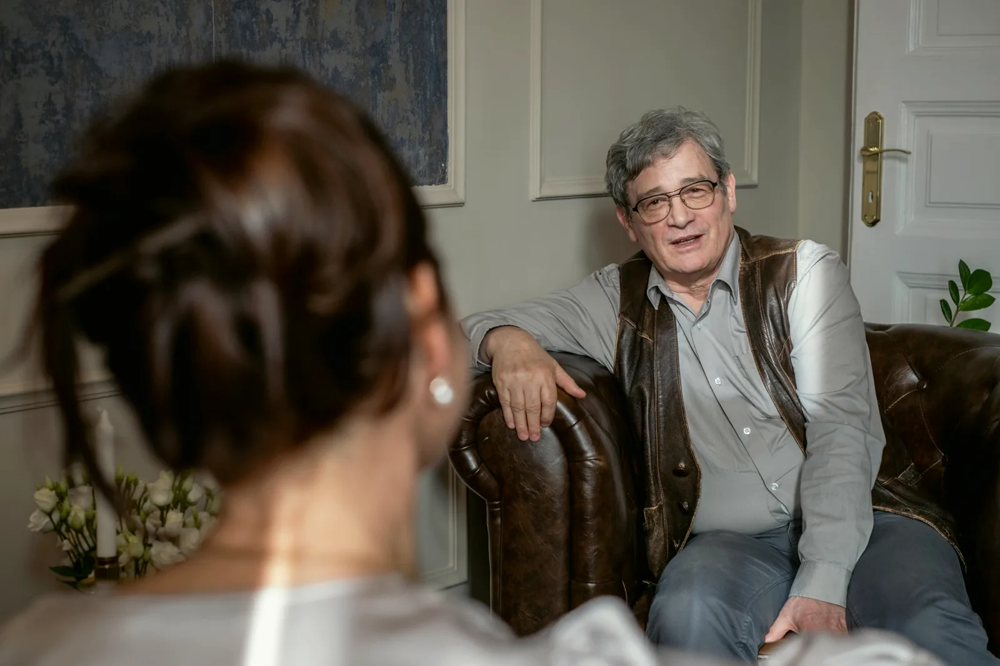

Szupervízió a képzésben lévők mögött
A szakpszichológus- és pszichoterapeuta-jelöltek munkáját kiképző szupervízió kíséri, belső és külső szupervízorokkal. Ha Önnel képzésben lévő kolléga dolgozik, a munkájára egy tapasztaltabb kolléga is rálát.
Amivel küzd
Szorongás, pánik Hangulat, depresszió Kiégés, stressz Gyász, veszteség Párkapcsolati válság Kamasz otthon Függőség Önismeret, életvezetésAmit kínálunk
Felnőtt egyéni terápia Pár- és családterápia Gyermek és serdülő Csoportterápiák Coaching Pszichiátriai szakrendelés Sportpszichológia Cégeknek
Akkreditáció és képzés
Az akkreditáció papíron egy okirat. A rendelésben keret: ki dolgozhat, milyen felügyelettel, milyen módszerrel.
A szakpszichológus- és pszichoterapeuta-jelöltek munkáját kiképző szupervízió kíséri, belső és külső szupervízorokkal. Ha Önnel képzésben lévő kolléga dolgozik, a munkájára egy tapasztaltabb kolléga is rálát.
A pszichoterapeuta szakképzőhely négy módszertani akkreditációval működik. Amit a kollégák alkalmaznak, azt államilag elismert képzésben tanítják és tanulják, nem szokásból hozzák.
A regiszter minden tagja ugyanannak a szakmai vezetésnek dolgozik, azonos keretben: ötven perc, ismert díjsáv, közös döntés a folytatásról. Ha váltani kell, nem kell új rendelőt keresnie.
Az ELTE PPK mesterszakos hallgatói 2022 óta a Központban töltik klinikai gyakorlatukat. A gyakorlat a ház szakembereinek vezetésével zajlik.
Ez a rész kollégáknak szól. Ha kliensként olvassa, a fenti négy pont az Öné, ez arról szól, ami mögötte áll.
Szakképzőhely
Felnőtt klinikai és mentálhigiéniai szakpszichológus szakképzőhely 2020 óta, pszichoterapeuta szakképzőhely 2022 óta, mind a négy módszertani akkreditációval. A gyakorlati képzés a Központ rendelésében, a ház szakembereinek vezetésével folyik.
A képzőhelyi jelentkezés feltételeiről és az aktuális helyekről a szakmai vezetés ad tájékoztatást a bejelentkezes@budaipszichologus.hu címen.

ELTE gyakorlat és szupervízió
Az ELTE PPK mesterszakos hallgatói 2022 óta a Központban töltik klinikai gyakorlatukat. A képzésben lévő kollégák munkáját kiképző szupervízió kíséri: belső szupervízorok a ház szakemberei közül, és külső szupervízorok.
Aki tanít, annak a saját munkája is mérce alatt áll. A képzés rendje a rendelést is köti: keret és szupervízió.
A pszichoterapeuta szakképzőhely mind a négy pszichoterápiás módszertani akkreditációval működik. A módszerek nevét a szakemberek profilja mutatja: ott áll, ki melyikben képzett, és mióta.
Ami a kliensnek ebből számít: ha módszert kell váltani, vagy két megközelítés együtt segít, házon belül van kihez fordulni, és nem kell elölről elmondania a történetét.
A képzésben lévő kollégák munkájára a ház belső szupervízorai mellett külső, független szakemberek is rálátnak.